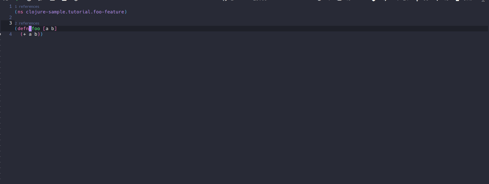
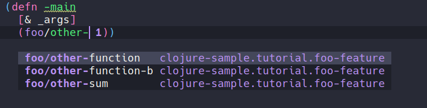
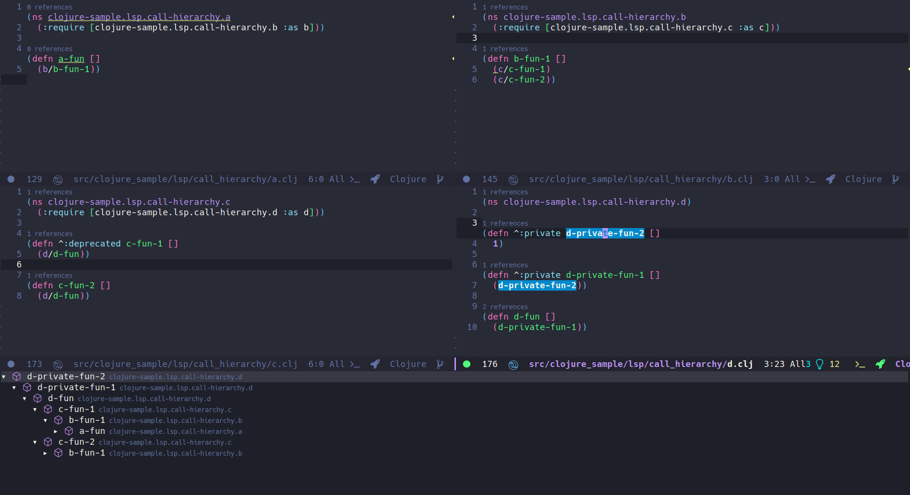
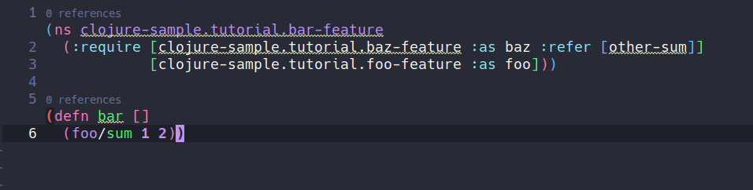

Configuring Emacs as a Clojure IDE#
Author: @ericdallo
In this guide, I will show you how to configure Emacs to develop Clojure using:
lsp-mode, which has many IDE features like completion, renaming, reference-searching, definition-finding, code lenses, and code actions- CIDER, the Emacs package most famous for enabling REPL-driven development with Clojure.
Why should I try LSP for Clojure?#
Coming from the Java world, when I started programming for Clojure in Emacs, it was odd to me that
for almost everything you needed to do with Clojure, you needed a REPL running in your project, and if you changed anything
in your project, you would need to reload the modified namespace/code to see the changes in the REPL.
I also
missed a lot of features popularized by Java IDEs, like cleaning unused imports,
viewing the call hierarchy of a method/function, formatting code automatically, checking syntax in real-time, and using code actions that could, for example, add a missing import.
Ever since I found clojure-lsp, which implements most of those features, I have been using it alongside CIDER without issues.
While I really like CIDER and believe it is one of the best tools for Clojure development,
you can complement it with clojure-lsp to make programming in Clojure even better.
Once it is running (and you are plugged into the REPL), CIDER will provide many of the same features that clojure-lsp does, so you need to tell Emacs how to resolve conflicts.
Therefore, if you want to have a more IDE-ish experience with Emacs, you should read this guide.
Basic configuration#
Here is a bare-bones lsp-mode configuration template to get you started with your own lsp-mode config,
or to try out in a separate one-off session. Please note that Emacs configuration frameworks such as
Spacemacs or Doom Emacs often ship with lsp-mode settings of their own; should you be using such a framework,
and find that lsp-mode doesn't behave as intended, please make sure to follow this tutorial from a clean starting point.
in your config or you could run in a separate session.
(require 'package)
(add-to-list 'package-archives '("melpa" . "http://melpa.org/packages/") t)
(package-initialize)
(setq package-selected-packages '(clojure-mode lsp-mode cider lsp-treemacs flycheck company))
(when (cl-find-if-not #'package-installed-p package-selected-packages)
(package-refresh-contents)
(mapc #'package-install package-selected-packages))
(add-hook 'clojure-mode-hook 'lsp)
(add-hook 'clojurescript-mode-hook 'lsp)
(add-hook 'clojurec-mode-hook 'lsp)
(setq gc-cons-threshold (* 100 1024 1024)
read-process-output-max (* 1024 1024)
treemacs-space-between-root-nodes nil
company-minimum-prefix-length 1
lsp-lens-enable t
lsp-signature-auto-activate nil
; lsp-enable-indentation nil ; uncomment to use cider indentation instead of lsp
; lsp-enable-completion-at-point nil ; uncomment to use cider completion instead of lsp
)
For more detailed info on how to setup lsp-mode, check here.
Installing the language server#
lsp-mode is a client-server application with Emacs acting as the client. In
order for it to work, you have to install a separate language server that
understands the specifics of your target language.
For Clojure, we will use clojure-lsp which as of 2021/01, is the only LSP server for Clojure, and has a lot of useful features that I will try to show in this guide.
Via lsp-mode#
lsp-mode ships with automatic installation scripts for some of the language servers and clojure-lsp
is one of the supported servers, you can install it using M-x lsp-install-server RET clojure-lsp.
After installed, lsp-mode will automatically initialize it when opening Clojure files.
Manually#
Check here for more information on how to build it manually.
For a custom path, you can set the path of the server location with:
(setq lsp-clojure-custom-server-command '("bash" "-c" "/path/to/clojure-lsp"))
LSP features#
This guide will focus on the features of lsp-mode that are most relevant to Clojure development. You can view documentation of all features at the
official lsp-mode site or clojure-lsp features section.
Syntax check#
It checks for errors and warnings on your code while you write it, it uses clj-kondo,
another amazing library that lints Clojure code, in the back-end so it's not required to install clj-kondo since clojure-lsp will
use it automatically.
It will also check for public unused functions/variables which is something that, as far as I know, does not exist in any other Clojure library/package:

Find definition/references#
You can find a function definition with lsp-find-definition or find all the references to that
symbol, variable or function with lsp-find-references or lsp-ui-peek-find-references if
lsp-ui is available.

Doom emacs users
You may need to remove the lookup handlers conflict from `cider` and/or `clj-refactor` if you want to use this LSP feature.(use-package! cider
:after clojure-mode
:config
(set-lookup-handlers! 'cider-mode nil))
(use-package! clj-refactor
:after clojure-mode
:config
(set-lookup-handlers! 'clj-refactor-mode nil))
Completion#
By default, lsp-mode uses company-mode as its completion front-end. When
present, company-mode and enabled for lsp-mode, it will be auto-configured and it will just work using the completion items returned by the LSP server.
clojure-lsp also has completion snippets, for more information check here.
If you do not want LSP completion, It's possible to use cider completion instead with:
(setq lsp-enable-completion-at-point nil) ; use cider completion

See also CIDER code completion
Code lens#
LSP supports code lenses, actionable text snippets that a server may want to display in a client IDE. clojure-lsp
uses it to show the reference count of a function/variable. They are disabled by default so you need to manually enable them via:
(setq lsp-lens-enable t)

Call hierarchy#
This feature returns the call hierarchy of a function/method.
As of now, clojure-lsp only supports returning the incoming-call hierarchy.

It uses lsp-treemacs, which you should install to use this feature.
Formatting#
For LSP formatting, clojure-lsp use cljfmt with support for all known cljfmt
settings.
You can format a region with lsp-format-region or the entire buffer with lsp-format-buffer.

Code actions#
One of the most important features considered by me is the code actions feature provided by the server. they are refactoring actions
that may change your code after applied, clojure-lsp some of the refactorings from below are suggested by the server depending
where user cursor is, for example Add missing namespace where clojure-lsp will suggest adding a missing require:

Refactorings#
clojure-lsp also has a lot of refactorings, some of them can be automatically triggered by
code actions like said above and others manually by user, one example of one of the most
used by me is clean-ns, which will remove any unused requires and refers:

Or rename which will rename the symbol at point and all usages/references:

For more info on all available refactorings, check here.
Conflict with clj-refactor when creating new files
clj-refactor and clojure-lsp have a feature of add the namespace form for new created files, but they may conflict if both are enable, inserting duplicated namespace forms. To fix that, you need to choose which one you wants to use: To disable this feature on clj-refactor:(setq cljr-add-ns-to-blank-clj-files nil) ; disable clj-refactor adding ns to blank files
;; on your .lsp/config.edn file
{:auto-add-ns-to-new-files? false}
Hover#
This feature shows the function/var signature on minibuffer about the symbol at cursor, it's a really useful feature which avoid the need to find definition all the time to check its signature.

Conflict with CIDER
clojure-lsp and CIDER have this same feature where it uses eldoc to show the signature on minibuffer and you should choose which one you want enabled during your development. Both work similar but remember that LSP doesn't need the REPL plugged in to work. To disable this feature on CIDER:(setq cider-eldoc-display-for-symbol-at-point nil) ; disable cider showing eldoc during symbol at point
(setq lsp-eldoc-enable-hover nil) ; disable lsp-mode showing eldoc during symbol at point
Semantic tokens (Experimental)#
Another feature recently introduced in LSP 3.16, is semantic tokens, which consists of the LSP server return to
client the tokens and what they mean, with that, lsp-mode can color the tokens according to their meaning on the code:
| semantic-tokens OFF | semantic-tokens ON | CIDER code evaluated |
|---|---|---|
 |
 |
 |
Performance#
For the first time clojure-lsp starts in your project, it will scan all jar dependencies and source code, this can
take a while depending on your project size, after started, it should be really fast and for the next time, it will use its cache and you may not notice any performance issues.
Server settings#
clojure-lsp has a lot of settings for improving your development experience, make sure to check it out the settings section.
For an example configuration, check here.
CIDER integration#
We suggest using both cider and lsp-mode for Clojure development.
I rely on cider to use its REPL, evaluate expressions, run tests, and more. You can execute M-x cider-jack-in to start the REPL.